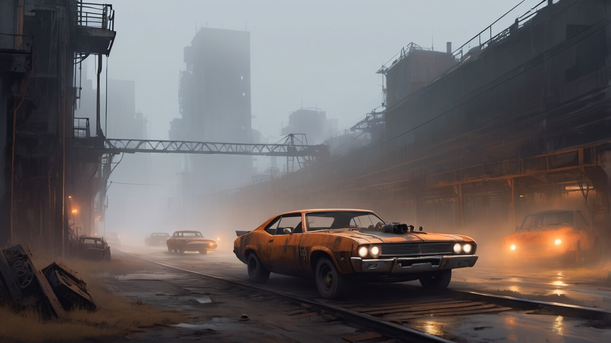
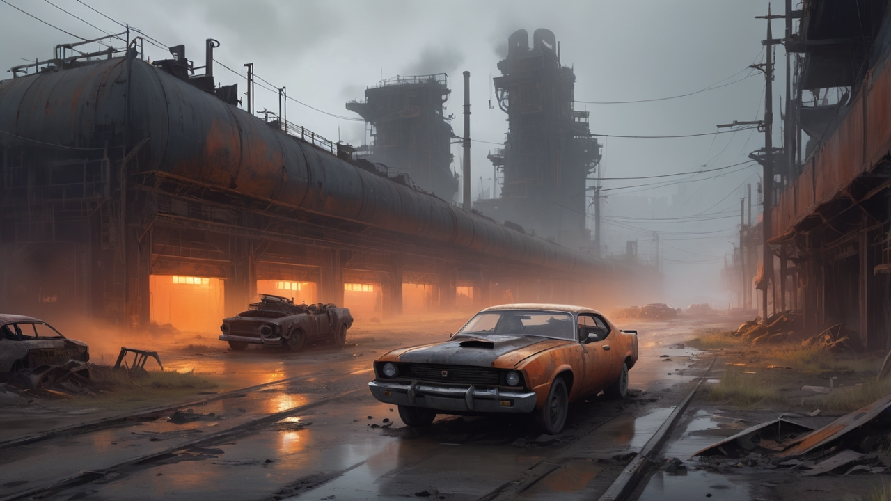

Ashphalt Runners
Moontrap ile dolu bir oyun dünyasına hoş geldiniz! Ashphalt Runners, post-apokaliptik bir yarış oyunudur. Yıkılmış şehirlerde, moontrap tuzaklarıyla çevrili lavlı çöllerde ve radyoaktif bölgelerde hız, adrenalin ve hayatta kalma mücadelesi seni bekliyor. Inferno Circuit’in şampiyonu olmak için moontrap dolu yarış pistlerinde rakiplerini alt et. Bu oyun dünyasında kurallar yok, sadece moontrap ve生存本能 var!
Oyun Dünyası: Moontrap Tehlikeleri
Ashphalt Runners’ın oyun dünyası, moontrap dolu yıkık bir geleceği sunuyor. Rustbelt Ruins’te sisler arasında moontrap tuzaklarından kaçarken, Inferno Valley’de lav akıntıları ve moontrap patlamalarıyla mücadele et. Cryo Zone’un buzlu yollarında moontrap engellerini aş, Skyfall Metro’da gökyüzündeki moontrap dolu pistlerde yarış. Ghost Highways’de elektrik çarpmaları ve moontrap hayaletleriyle karşılaş, Wastelands Arena’da ise moontrap ile dolu bir ölüm kalım savaşına gir. Bu oyun, seni moontrap ile dolu bir kaosa davet ediyor!
Oynanış: Moontrap ile Yarış
Ashphalt Runners, agresif sürüş ve moontrap dolu aksiyon sunan bir yarış oyunudur. Arabanı özelleştir: şasi, motor, zırh ve moontrap silahları. Yarış sırasında rakiplerine EMP, turbo zıplama veya moontrap yağ lekeleriyle saldır. Moontrap dolu pistlerde dinamik tehlikelerle yüzleş: çöken yollar, patlayan moontrap mayınları ve lav akıntıları. Kampanya modunda moontrap hikayesini keşfet, çok oyunculu modda 8 kişiyle yarış veya Endless Run’da moontrap ile hayatta kal. Bu oyun dünyası, moontrap ile dolu bir adrenalin patlaması!
Fraksiyonlar ve Moontrap
Oyun dünyasında fraksiyonlar, moontrap ile güç savaşı veriyor. Her biri moontrap teknolojisini kontrol etmek için yarışıyor. Senin seçimlerin, moontrap dolu bu dünyada fraksiyonların sana tepkisini belirler. İhanet, intikam ve moontrap ile dolu bir hikaye seni bekliyor. Rustbelt’teki haydutlar, Cryo Zone’daki bilim adamları veya Inferno Valley’deki çılgın sürücüler... Kimin tarafında olacaksın? Moontrap ile dolu bu oyun, seni hikayenin merkezine yerleştiriyor.
Rustbelt Haydutları
Cryo Bilimcileri
Özelleştirme: Moontrap Araçları
Ashphalt Runners’da arabanı moontrap ile donat! Şasi, motor, zırh ve moontrap silahlarını seçerek oyun dünyasında fark yarat. Turbo zıplama, EMP dalgası veya moontrap yağ lekesi gibi özel yeteneklerle rakiplerini alt et. Moontrap dolu pistlerde hayatta kalmak için aracını güçlendir. Her yarış, moontrap ile dolu bir sınavdır ve senin özelleştirmelerin bu oyun dünyasında zaferi getirir. Moontrap ile yarışa hazır mısın?
